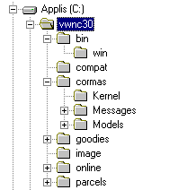
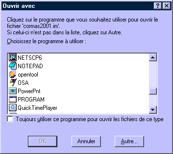
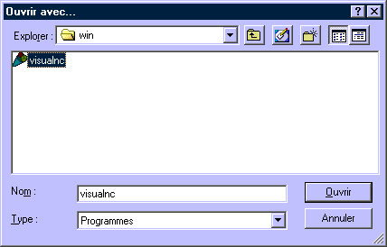
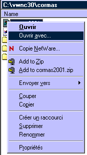
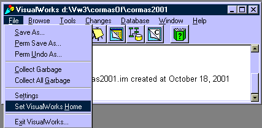
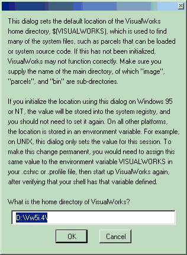
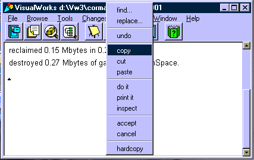
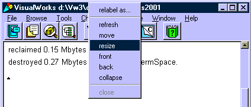
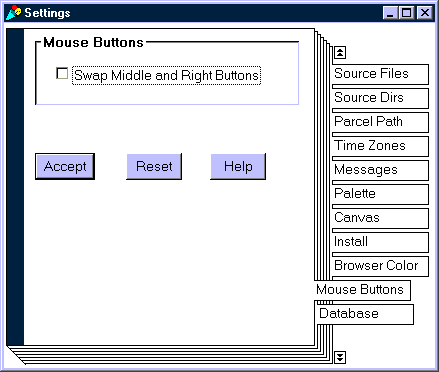

|
Installation simple pour WindowsTéléchargé le fichier préconfigurer pour WindowsPour les utilisateur de Windows X, il est plus simple de télécharger juste ce fichier là : installation complète VW+Cormas pour Win . Dézipper ce fichier à la racine dun de vos disques dursCe disque sappelle soit C:\ soit D:\ ou etc. Note : la préconfiguration est réglée sur le disque C:\ , mais vous pouvez installer VisualWorks sur nimporte quel disque. Vous obtenez alors une nouvelle arborescence du type : "MonDisque":\vwnc30\*
 Lancer Cormas2001Aller dans "MonDisque":\vwnc30\cormas\ et double-clickez sur cormas2001.im. Si ce type de fichier na jamais été associé avec un fichier exécutable, alors une fenêtre souvre :  Cochez la case "Toujours utiliser ce programme pour ouvrir les fichiers de ce type". Puis, clickez alors sur le bouton "Autre" et sélectionnez le fichier "MonDisque":\vwnc30\bin\win\visualnc.exe  Note: Si ce type de fichier (*.im) a déjà été associé avec un fichier exécutable, alors vous pouvez changer lassociation en clickant avec le bouton droit sur cormas2001.im tout en maintenant la touche Shift enfoncée et en sélectionnant ouvrir avec...  Si vous navez pas installé Cormas sur le disque CDans ce cas, vous devez juste modifier le chemin de la racine de VisualWorks (le classpath pour ceux qui connaissent plutôt Java !), de façon à ce quil pointe sur le répertoire vwnc30\. Pour cela, sélectionnez "Set VisualWorks Home" du menu "File" de VisualWorks  Tapez alors le chemin du répertoire vwnc30\. Exemple : installation sur le disque D :  Puis sauvez votre image de cormas2001. Vérifier la configuration de la sourisDans la fenêtre du bas de VisualWorks, clicker avec le bouton droit de la souris en maintenant appuyer. Un menu contextuel apparaît. Si vous obtenez le menu suivant (find, replace, undo, copy, cut, paste, do it, print it, etc.) :  Alors, cest parfait, vous navez plus rien à faire !  Alors il faut changer la configuration de la souris. Pour cela, dans le menu de VisualWorks, sélectionner : File -> Settings. Une nouvelle fenêtre apparaît. Descender jusquà longlet "Mouse Buttons"  Changer létat de la case de pointage (soit vide, soit plointée, selon son état originale), puis "Accept". Fermer cette fenêtre et vérifier à nouveau que le menu contextuel est correct. Puis sauvez votre image de cormas2001. Pour essayer Cormas, vous pouvez télécharger quelques modèles didactiques. Dautre part, une bibliothèque de modèles téléchargeables est disponible à partir des pages applications. Nous vous invitons à vous inscrire sur le forum Cormas, qui vous permettra de vous informer et de communiquer vos commentaires aux autres utilisateurs.
|